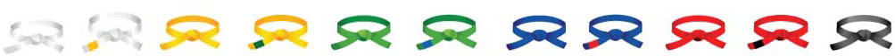

Tekvondo je korejska borilačka veština nastala 40-ih godina dvadesetog veka spajanjem različitih veština koje su se vežbale u to vreme. Njeno ime dolazi iz reči Tae , što znači udariti nogom, Kwon , što znači udariti rukom i Do , što znači put. Tekvondo je udaračka veština koju odlikuju atraktivne nožne tehnike i brzina i ful kontakt. Danas se tekvondo smatra jednom od najpopularnijih borilačkih veština i sportova,i jedan je među zvaničnim sportovima na Olimpijadi, a broj vežbača u svetu se procenjuje na više od 100 miliona.
Borbe ( kyorugi )
Najpopularniji aspekt tekvondoa je sigurno slobodna borba. U slučaju olimpijske borbe po WTF pravilima, radi se o borbi po pravilima ful-kontakta, sa štitnicima i o međunarodnom sportu koji je predstavljen na olimpijskim igrama. Međunarodna federacija tekvondoa (ITF) ima svoja pravila, s kontrolisanim kontaktom, bez štitnika, ali i s većim brojem dozvoljenih tehnika.
Ako ste povezani na internet, možete pogledati borbu jednog od najkompletnijih tekvondo boraca trenutno ( Dae-Hoon Lee, plavi takmičar ).
Forme
Forma je borba protiv zamišljenog protivnika, koja se sastoji od 16-30 pokreta. Pokreti se sastoje od određenih udaraca i blokada rukom i nogom. Učenje formi je pravi temelj svake borilačke veštine pa tako i tekvondoa. Forme pomažu u usavršavanju kretanja i tehnike. Forme se još nazivaju poomsae ili hjong. Forme su koreografisane borbe protiv zamišljenog napadača koje vežbač izvodi sam s ciljem razvijanja ravnoteže i usavršavanja osnovnih tehnika. Većina tekvondo sportista danas vežba forme Kukkiwon ili forme ITF (ili kombinaciju).
Pojasevi i zvanja
Tekvondo zvanja se dele na deset učeničkih zvanja (keup) i deset majstorskih zvanja (dan). Novi polaznici kreću od desetog zvanja keup (beli pojas),samim početkom vežbanja i uclanjenjem u klub, stiče se pravo na nošenje belog pojasa. Za njega nije potrebno polaganje. Na svakom sledećem testiranju, učenik ima pravo da polaže za sledeći viši pojas, sve do majstorskih zvanja dan (crni pojas).

Pojasevi su poređani od najnižeg do najvišeg,s leva na desno